목
주요 증상
- 뒷목·어깨가 항상 무겁고 뻐근함
- 만성 두통과 눈의 피로가 잦음
- 턱이 앞으로 나오고 목 뒤가 짧아진 느낌
자가진단 체크리스트
각 항목을 직접 시행해보고 해당 여부를 체크하세요. 2개 이상 해당된다면 재활운동을 시작하는 것을 권장합니다.
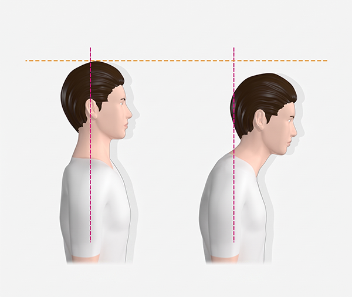
-
벽 테스트 (Wall Test)
방법등과 엉덩이를 벽에 붙이고 자연스럽게 섭니다. 팔은 편안히 내리고 시선은 정면. 뒷통수와 벽 사이 거리를 확인합니다.
판단뒷통수가 벽에서 5cm 이상 떨어지면 거북목 상태를 의심할 수 있습니다.
-
귀-어깨 정렬 확인
방법옆에서 자세를 사진 찍거나 큰 거울로 옆모습을 확인합니다. 귀와 어깨 중앙의 위치를 비교합니다.
판단귀가 어깨보다 앞쪽으로 나와 있으면 목뼈 정렬이 무너진 상태입니다.
-
이중턱 만들기 검사
방법정면을 바라본 채로 턱을 뒤로 부드럽게 당겨 이중턱을 만들어봅니다.
판단이중턱이 잘 만들어지지 않거나 뒷목이 심하게 뻐근하면 심부 굴곡근 약화 신호입니다.
재활운동법
순서대로 진행하되, 통증이 심해지면 즉시 중단하세요. 하루 2~3회 시행을 권장합니다.
-
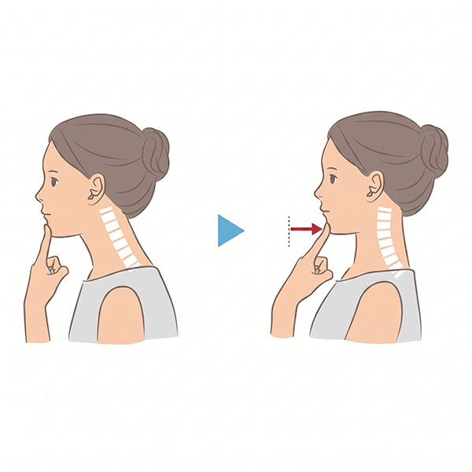
턱 당기기 (Chin Tuck)시작 자세벽에 등을 대고 서거나 등받이 있는 의자에 곧게 앉아 어깨는 내리고 시선은 정면을 유지합니다.
동작 방법이중턱을 만든다는 느낌으로 턱을 뒤로 밀어 넣으며 뒷목이 길어지는 감각을 느낍니다.
주의사항고개를 아래로 숙이지 말 것. 어깨가 앞으로 말리지 않도록 견갑골을 살짝 뒤로 조입니다.
-
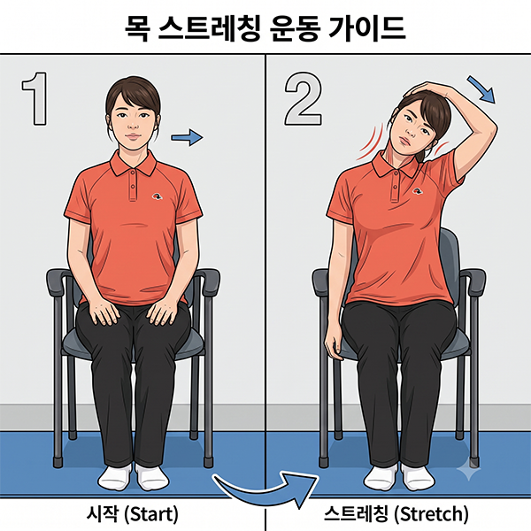
상부 승모근 스트레칭시작 자세의자에 곧게 앉아 오른손으로 의자 아래 모서리를 잡아 어깨를 고정합니다.
동작 방법왼손으로 머리 오른쪽을 잡고 왼쪽 대각선 앞으로 부드럽게 당깁니다. 목 오른쪽이 시원하게 늘어나야 합니다.
주의사항통증이 느껴질 정도로 세게 당기지 않습니다. 반동 없이 정적으로 유지합니다.
-
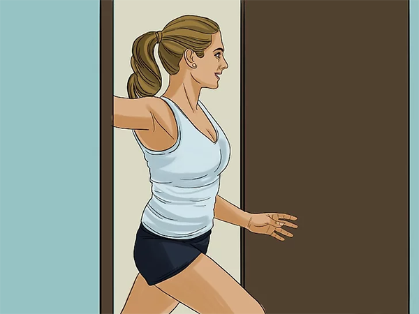
흉근 스트레칭 (Doorway Stretch)시작 자세문틀 옆에 서서 오른팔을 문틀에 90도로 대고 팔꿈치를 어깨 높이에 위치시킵니다.
동작 방법오른발을 한 걸음 앞으로 내딛으며 몸통을 왼쪽으로 부드럽게 회전. 가슴 앞쪽이 늘어나는 감각을 느낍니다.
주의사항어깨 앞쪽에 콕콕 찌르는 통증이 있으면 팔꿈치 각도를 낮추거나 중단합니다.
주요 증상
- 목에서 팔·손가락으로 뻗치는 저림·통증
- 손가락 감각이 둔해지고 물건을 자주 떨어뜨림
- 목을 뒤로 젖히거나 아픈 쪽으로 돌릴 때 팔 통증이 심해짐
자가진단 체크리스트
각 항목을 직접 시행해보고 해당 여부를 체크하세요. 2개 이상 해당된다면 재활운동을 시작하는 것을 권장합니다.
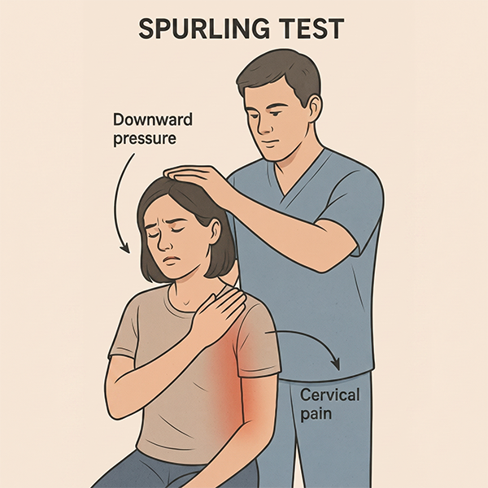
-
스펄링 검사 (Spurling Test)
방법고개를 뒤로 살짝 젖힌 뒤 아픈 방향으로 돌리고, 위에서 정수리를 부드럽게 눌러봅니다.
판단팔·손가락으로 저림이나 통증이 뻗치면 신경뿌리 압박을 강하게 의심합니다.
-
좌우 손가락 감각 비교
방법뾰족한 물체(연필 끝 등)로 좌우 손가락을 각각 부드럽게 자극하며 감각 차이를 확인합니다.
판단특정 손가락(엄지·검지 또는 새끼)의 감각이 반대편보다 확연히 둔하면 신경 손상 가능성.
-
악력 좌우 비교
방법양손으로 각각 힘껏 주먹을 쥐어보고 반대편과 비교합니다.
판단한쪽이 눈에 띄게 약하거나 물건을 자주 놓치면 신경 압박이 진행된 상태입니다.
재활운동법
순서대로 진행하되, 통증이 심해지면 즉시 중단하세요. 하루 2~3회 시행을 권장합니다.
-
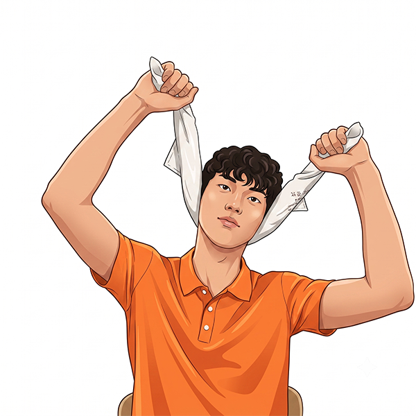
수건 이용 목 견인시작 자세의자에 곧게 앉아 수건을 목 뒤에 걸치고 양 끝을 잡습니다.
동작 방법양손을 대각선 앞·위 방향으로 부드럽게 당겨 목을 늘려줍니다.
주의사항급성기(저림이 심할 때)에는 하지 않습니다. 저림이 심해지면 즉시 중단합니다.
-
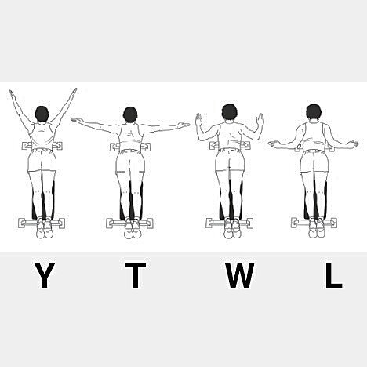
하부 승모근 강화 (Prone Y·T)시작 자세매트에 엎드려 얼굴은 아래를 향하고 팔은 옆으로 편안하게 벌립니다.
동작 방법팔을 Y자 → T자 모양으로 만들며 견갑골을 아래·안쪽으로 모아 상체를 살짝 들어올립니다.
주의사항목을 뒤로 젖히지 말고 시선은 바닥. 어깨가 귀에 붙지 않게 아래로 내립니다.
-
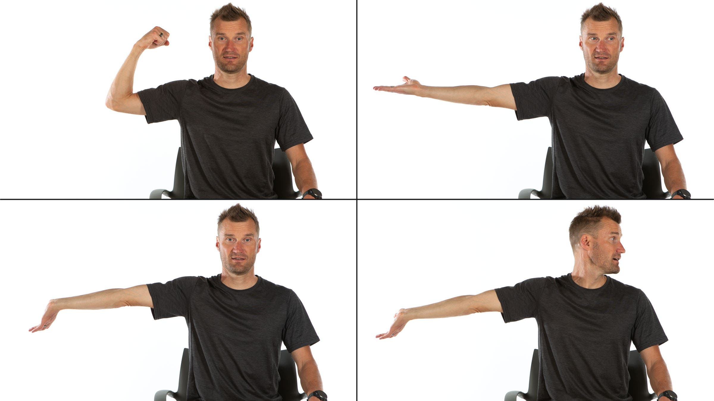
정중신경 활주 (Median Nerve Gliding)시작 자세팔을 옆으로 곧게 뻗어 손바닥이 앞을 향하게 합니다.
동작 방법손목을 위로 젖혔다가 아래로 굽히며 정중신경을 부드럽게 활주시킵니다.
주의사항급격한 저림이 유발되면 범위를 줄입니다. 통증 없는 범위에서만 시행합니다.
어깨
주요 증상
- 옆으로 팔을 들 때 60~120도 사이에서 통증 (통증호)
- 밤에 아픈쪽으로 못 눕고 팔을 들 때 뚝 소리
- 팔에 힘이 빠지는 느낌, 물건을 들다 떨어뜨림
자가진단 체크리스트
각 항목을 직접 시행해보고 해당 여부를 체크하세요. 2개 이상 해당된다면 재활운동을 시작하는 것을 권장합니다.
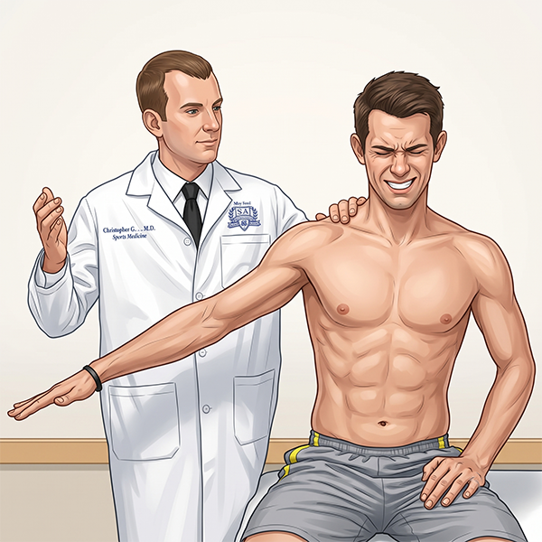
-
엠프티 캔 검사 (Empty Can Test)
방법팔을 옆으로 90도 들고 30도 앞으로 뻗은 뒤 엄지가 바닥을 향하게 하고 저항을 줍니다.
판단어깨 위쪽에 통증이 있고 힘이 빠지면 극상근 손상을 의심합니다.
-
드롭 암 검사 (Drop Arm Test)
방법팔을 옆으로 90도 든 상태에서 아주 천천히 아래로 내려봅니다.
판단팔이 힘없이 툭 떨어지거나 심한 통증이 유발되면 회전근개 파열 가능성이 있습니다.
-
통증호 검사 (Painful Arc)
방법팔을 옆으로 천천히 들어올렸다가 아래로 내리면서 통증 위치를 확인합니다.
판단60~120도 사이에서만 통증이 있고 그 위·아래는 편하면 회전근개 충돌 신호.
재활운동법
순서대로 진행하되, 통증이 심해지면 즉시 중단하세요. 하루 2~3회 시행을 권장합니다.
-
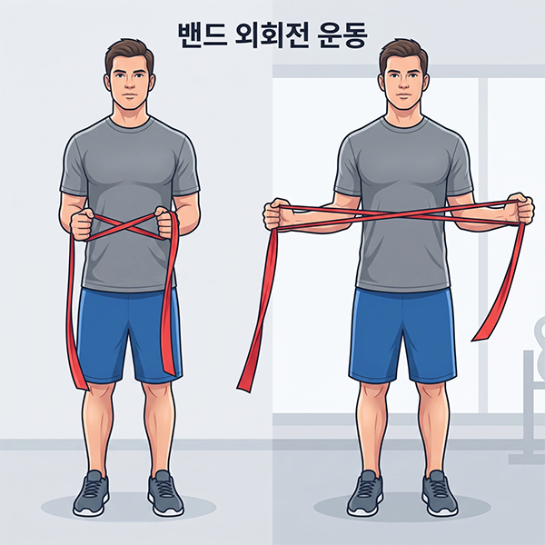
밴드 외회전 (Band External Rotation)시작 자세팔꿈치를 옆구리에 붙이고 90도로 굽혀 세라밴드를 잡습니다.
동작 방법팔꿈치는 고정한 채 손등이 바깥쪽으로 향하도록 밴드를 당깁니다.
주의사항어깨가 위로 올라가지 않게. 통증이 없는 범위에서만 시행합니다.
-
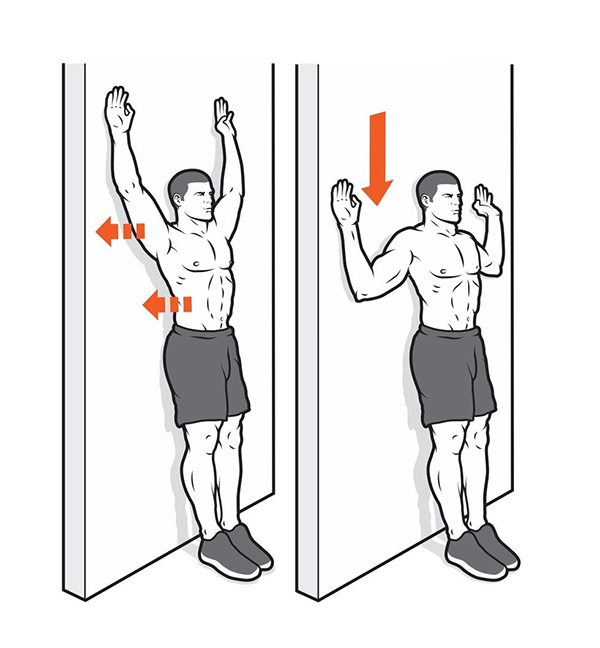
견갑골 리트랙션 (Y·T·W Exercise)시작 자세엎드리거나 벽에 등을 대고 팔을 편안하게 뻗습니다.
동작 방법Y자 → T자 → W자 순서로 팔을 움직이며 견갑골을 뒤·아래로 모읍니다.
주의사항목이 뒤로 젖혀지지 않게. 어깨가 귀에 붙지 않도록 아래로 내립니다.
-
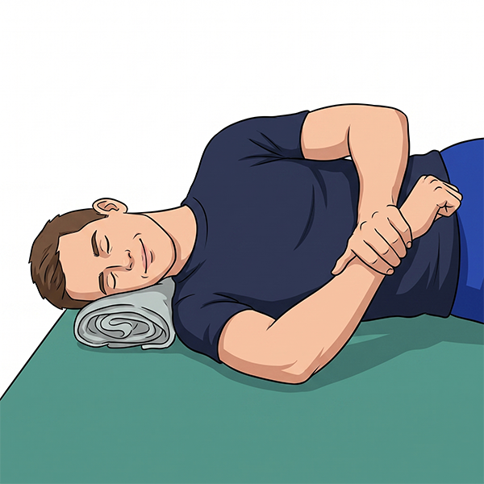
후방 관절낭 스트레칭 (Sleeper Stretch)시작 자세아픈쪽으로 옆으로 눕고 아래팔의 팔꿈치를 90도 굽혀 위로 세웁니다.
동작 방법반대편 손으로 아래팔의 손을 바닥 방향으로 부드럽게 눌러 후방 관절낭을 늘립니다.
주의사항급격한 통증이 있으면 즉시 중단. 시원한 정도의 강도만 유지합니다.
주요 증상
- 어깨 앞쪽이 뻐근하고 콕콕 아픔
- 팔을 뒤로 젖히거나 만세할 때 어깨 앞에서 걸리는 느낌
- 라운드 숄더 자세, 컴퓨터·스마트폰 사용 후 심해짐
자가진단 체크리스트
각 항목을 직접 시행해보고 해당 여부를 체크하세요. 2개 이상 해당된다면 재활운동을 시작하는 것을 권장합니다.
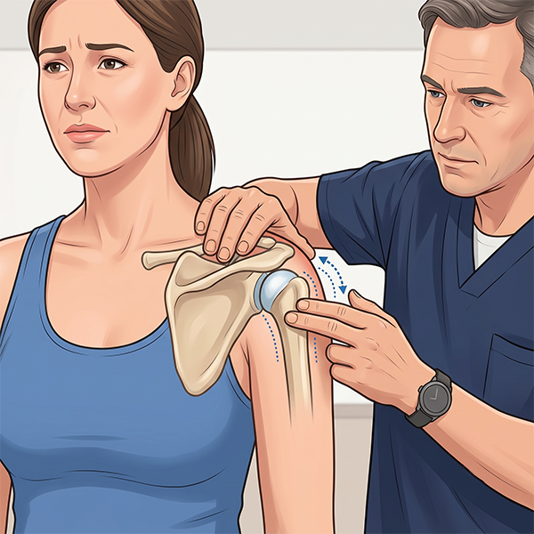
-
상완골 머리 위치 확인
방법옆에서 자세를 사진 찍어 견봉과 상완골 머리(어깨 앞 볼록한 뼈)의 위치를 비교합니다.
판단상완골 머리가 견봉보다 1/3 이상 앞으로 튀어나오면 전방활주 상태입니다.
-
누워서 어깨 위치 검사
방법매트에 편안히 누워 어깨 뒷면이 바닥에 자연스럽게 닿는지 확인합니다.
판단어깨 뒤쪽이 바닥에서 뜨고 눌러도 잘 안 내려가면 어깨가 앞으로 밀린 상태입니다.
-
뒤로 손깍지 들기
방법양팔을 등 뒤로 뻗어 손깍지를 끼고 부드럽게 위로 들어올립니다.
판단어깨 앞쪽에 통증이 유발되거나 팔이 잘 올라가지 않으면 앞쪽 관절낭 단축 신호.
재활운동법
순서대로 진행하되, 통증이 심해지면 즉시 중단하세요. 하루 2~3회 시행을 권장합니다.
-
흉근 스트레칭 (Doorway Stretch)
시작 자세문틀 옆에 서서 오른팔을 문틀에 90도로 대고 팔꿈치는 어깨 높이에 위치시킵니다.
동작 방법오른발을 한 걸음 앞으로 내딛으며 몸을 앞으로 밀어 가슴 앞쪽을 늘려줍니다.
주의사항어깨에 콕콕 찌르는 통증이 있으면 즉시 중단. 시원한 정도의 스트레칭 강도만 유지합니다.
-
후방 회전근개 강화 (Band External Rotation)
시작 자세서서 팔꿈치를 옆구리에 붙이고 90도로 굽혀 세라밴드를 잡습니다.
동작 방법팔꿈치는 그대로 유지하고 손등이 바깥쪽을 향하도록 밴드를 당깁니다.
주의사항팔꿈치가 옆구리에서 떨어지지 않게. 어깨가 위로 올라가지 않도록 주의합니다.
-
견갑골 리트랙션 (Wall Y·T·W)
시작 자세벽에 등·엉덩이·뒷통수를 모두 붙이고 팔을 벽에 대고 Y자로 뻗어 올립니다.
동작 방법Y → T → W 순서로 팔을 벽을 따라 움직이며 견갑골을 뒤·아래로 모읍니다.
주의사항허리가 벽에서 뜨지 않게. 팔이 벽에서 떨어지면 범위를 줄여서 진행합니다.
척추
주요 증상
- 앞으로 굽힐 때 요통이 심해짐
- 엉덩이·다리로 뻗치는 저림 (좌골신경통)
- 재채기·기침 시 통증 악화, 아침에 특히 뻣뻣함
자가진단 체크리스트
각 항목을 직접 시행해보고 해당 여부를 체크하세요. 2개 이상 해당된다면 재활운동을 시작하는 것을 권장합니다.
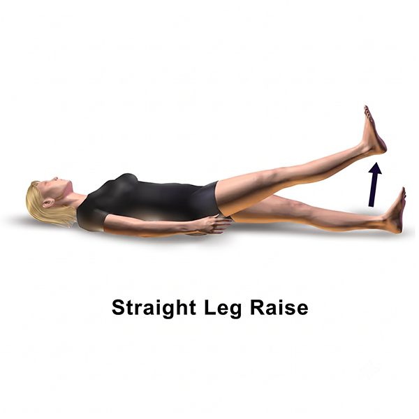
-
하지직거상 검사 (Straight Leg Raise)
방법매트에 누워 다리를 곧게 편 채로 천천히 위로 들어올려봅니다.
판단70도 이하에서 다리 뒤·엉덩이로 뻗치는 저림·통증이 있으면 좌골신경 압박 신호.
-
발뒤꿈치·발끝 걷기
방법발뒤꿈치만 대고 걷기, 이어서 발끝만 대고 걷기를 각각 시도합니다.
판단어느 한쪽이 잘 안 되고 힘이 빠지면 특정 신경뿌리 손상 가능성이 있습니다.
-
앉기 vs 눕기 통증 비교
방법30분간 앉아있을 때와 누워있을 때의 통증 정도를 비교해봅니다.
판단앉으면 심해지고 누우면 편해지면 디스크의 전형적인 통증 패턴입니다.
재활운동법
순서대로 진행하되, 통증이 심해지면 즉시 중단하세요. 하루 2~3회 시행을 권장합니다.
-
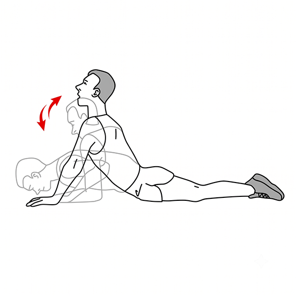
맥킨지 신전운동 (McKenzie Extension)시작 자세매트에 엎드려 손바닥은 어깨 옆에 두고 팔꿈치를 굽힙니다.
동작 방법골반은 바닥에 붙인 채 팔로 상체만 부드럽게 밀어 올려 등을 아치로 만듭니다.
주의사항다리로 저림이 심해지면 즉시 중단. 무리해서 최대 각도까지 밀어올리지 않습니다.
-
 브릿지 (Bridge)
브릿지 (Bridge)시작 자세누워서 무릎을 세우고 발을 엉덩이 폭으로 벌립니다.
동작 방법엉덩이에 힘을 주고 골반을 천장으로 들어올려 몸이 일직선이 되게 유지합니다.
주의사항허리로만 밀어 올리지 말고 엉덩이 힘 사용. 목이 뒤로 젖혀지지 않게 주의합니다.
-
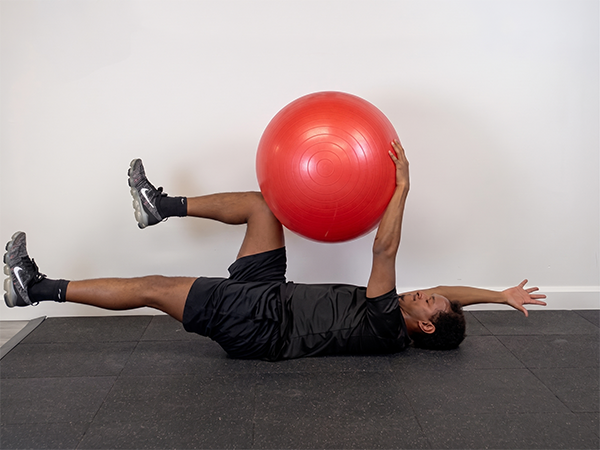
데드버그 (Dead Bug)시작 자세누워서 팔은 천장 쪽으로 뻗고 다리는 무릎 90도로 굽혀 들어올립니다.
동작 방법반대쪽 팔과 다리를 천천히 뻗으며 허리는 바닥에 밀착시킨 상태를 유지합니다.
주의사항허리가 바닥에서 뜨면 범위를 줄일 것. 코어 힘으로 컨트롤합니다.
주요 증상
- 오래 서 있거나 걸으면 다리 저림·힘 빠짐 (간헐적 파행)
- 앞으로 굽히거나 앉으면 편해지고, 뒤로 젖히면 심해짐
- 카트를 밀거나 자전거는 편함, 언덕 내려갈 때 더 힘듦
자가진단 체크리스트
각 항목을 직접 시행해보고 해당 여부를 체크하세요. 2개 이상 해당된다면 재활운동을 시작하는 것을 권장합니다.
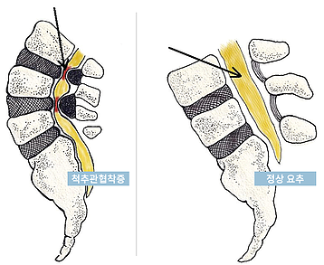
-
서서 5분 검사
방법편평한 곳에서 아무것도 잡지 않고 5분 이상 서 있어봅니다.
판단다리 저림·힘 빠짐이 점점 심해져 앉고 싶어지면 협착증 가능성이 높습니다.
-
허리 굽히기·젖히기 비교
방법허리를 앞으로 굽혔을 때와 뒤로 젖혔을 때의 증상을 비교합니다.
판단뒤로 젖힐 때 다리 저림이 유발되거나 악화되면 협착증의 전형적인 증상입니다.
-
자전거·카트 편안함 검사
방법카트를 밀거나 자전거를 탈 때가 그냥 걸을 때보다 편한지 확인합니다.
판단앞으로 굽혀지는 자세일 때 편해지면 협착증의 전형적 패턴입니다.
재활운동법
순서대로 진행하되, 통증이 심해지면 즉시 중단하세요. 하루 2~3회 시행을 권장합니다.
-
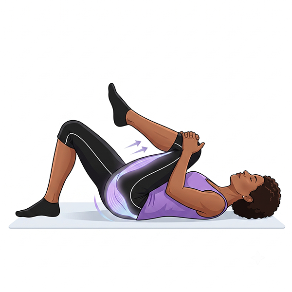
무릎 가슴 당기기 (Knee to Chest)시작 자세누워서 무릎을 세운 자세로 편안하게 준비합니다.
동작 방법한쪽 또는 양쪽 무릎을 천천히 가슴 방향으로 부드럽게 당겨줍니다.
주의사항목이나 어깨에 힘이 들어가지 않게. 통증 없는 범위에서만 시행합니다.
-
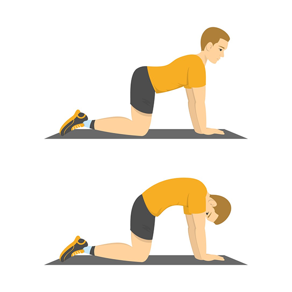
캣카우 (Cat-Cow)시작 자세네발기기 자세로 어깨 아래에 손, 골반 아래에 무릎을 위치시킵니다.
동작 방법숨을 뱉으며 등을 둥글게 말고, 숨을 들이쉬며 등을 아래로 아치를 만듭니다.
주의사항목이나 팔꿈치에 힘이 들어가지 않게 부드럽게. 반동 없이 시행합니다.
-
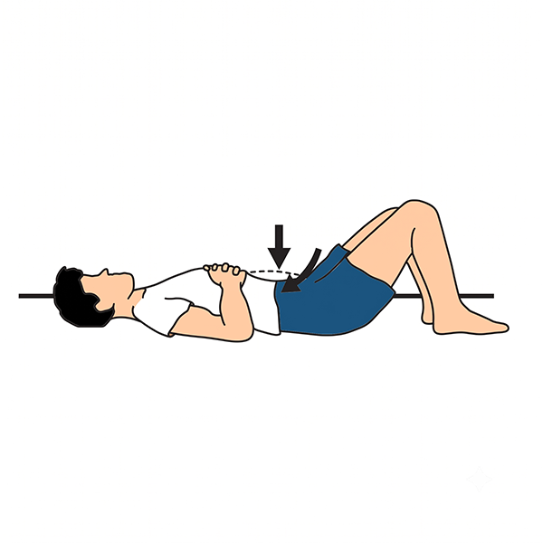
골반 후방경사 (Pelvic Tilt)시작 자세누워서 무릎을 세우고 발은 엉덩이 폭으로 벌립니다.
동작 방법허리를 바닥에 밀착시키듯 골반을 뒤로 기울여 하복부에 힘을 줍니다.
주의사항엉덩이가 바닥에서 뜨지 않게. 호흡을 참지 않고 자연스럽게 유지합니다.
골반
주요 증상
- 오래 서 있거나 앉아있으면 엉덩이·허리 쪽이 뻐근함
- 전방경사: 배가 나오고 엉덩이가 뒤로 튀어나온 자세, 요추 과전만
- 후방경사: 엉덩이가 납작하고 등이 굽음, 뒷다리·엉덩이 뻐근함
자가진단 체크리스트
각 항목을 직접 시행해보고 해당 여부를 체크하세요. 2개 이상 해당된다면 재활운동을 시작하는 것을 권장합니다.
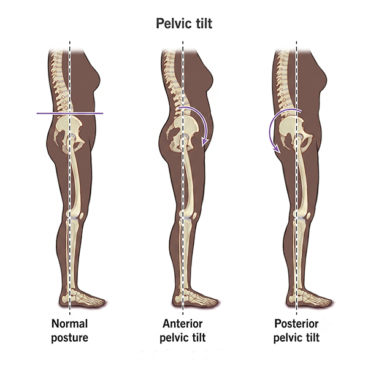
-
벽 등지고 손 넣기
방법벽에 등·엉덩이를 붙이고 서서 허리와 벽 사이에 손바닥을 넣어봅니다.
판단손이 쉽게 들어가면 전방경사, 손이 잘 들어가지 않으면 후방경사 상태입니다.
-
골반 앞뼈 정렬 확인
방법골반 앞쪽 튀어나온 뼈(장골극)와 치골이 이루는 라인을 옆에서 확인합니다.
판단앞으로 기울어져 있으면 전방경사, 뒤로 기울어져 있으면 후방경사 상태입니다.
-
옆에서 전신 자세 확인
방법옆에서 자세를 찍어 요추(허리뼈)의 굴곡을 확인합니다.
판단요추가 과도한 아치를 그리면 전방경사, 요추가 평평하면 후방경사입니다.
재활운동법
순서대로 진행하되, 통증이 심해지면 즉시 중단하세요. 하루 2~3회 시행을 권장합니다.
-
골반 후방경사 (Pelvic Tilt)
시작 자세누워서 무릎을 세우고 발은 엉덩이 폭으로 벌립니다.
동작 방법허리를 바닥에 완전히 밀착시키며 골반을 뒤로 기울여 하복부에 힘을 줍니다.
주의사항엉덩이가 뜨지 않게. 호흡은 자연스럽게 유지합니다.
-
데드버그 (Dead Bug)
시작 자세누워서 팔은 천장으로, 다리는 무릎 90도로 굽혀 들어올립니다.
동작 방법반대쪽 팔·다리를 천천히 뻗으며 허리는 바닥에 밀착시킨 채 유지합니다.
주의사항허리가 바닥에서 뜨는 순간 중단하고 범위를 줄여 다시 시작합니다.
-
 고관절 굴곡근 스트레칭 (Kneeling Hip Flexor)
고관절 굴곡근 스트레칭 (Kneeling Hip Flexor)시작 자세한쪽 무릎을 매트에 꿇고 반대 다리는 앞으로 90도로 세웁니다.
동작 방법뒤쪽 엉덩이에 힘을 주며 골반을 앞으로 밀어 뒷다리 앞쪽을 늘려줍니다.
주의사항허리를 뒤로 젖히지 말고 골반을 후방으로 유지한 상태에서 진행합니다.
주요 증상
- 양반다리·쪼그려앉기 시 골반 안쪽·사타구니가 찝히듯 아픔
- C-사인 — 엉덩이 옆을 엄지·검지로 잡듯이 통증 부위를 표현하게 됨
- 오래 앉아있거나 차에서 내릴 때 사타구니 통증
자가진단 체크리스트
각 항목을 직접 시행해보고 해당 여부를 체크하세요. 2개 이상 해당된다면 재활운동을 시작하는 것을 권장합니다.
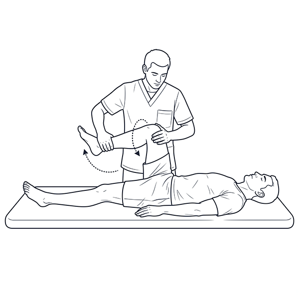
-
FADIR 검사
방법누워서 무릎을 90도 굽히고 무릎을 안쪽으로 밀어넣어봅니다.
판단사타구니에 찝히는 듯한 통증이 유발되면 충돌증후군을 강하게 의심합니다.
-
딥 스쿼트 검사
방법발을 어깨 폭으로 벌리고 최대한 깊이 앉아봅니다.
판단최저점에서 골반 앞쪽·사타구니가 찝히거나 통증이 있으면 FAI의 전형적 특징.
-
C-사인 확인
방법통증 부위를 손으로 짚어 표시해봅니다.
판단엄지·검지로 옆골반을 C자 모양으로 잡듯이 표현하면 FAI의 전형적 신호입니다.
재활운동법
순서대로 진행하되, 통증이 심해지면 즉시 중단하세요. 하루 2~3회 시행을 권장합니다.
-
 90/90 힙 스트레칭
90/90 힙 스트레칭시작 자세바닥에 앉아 앞다리·뒷다리 모두 무릎을 90도로 굽힙니다.
동작 방법앞쪽 다리의 발끝 방향으로 상체를 부드럽게 숙여 엉덩이 옆·뒷쪽을 늘립니다.
주의사항골반이 바닥에서 뜨지 않게. 통증 없는 범위에서만 시행합니다.
-
 클램쉘 (Clamshell)
클램쉘 (Clamshell)시작 자세옆으로 누워 무릎을 90도로 굽히고 발뒤꿈치를 서로 붙입니다.
동작 방법발뒤꿈치는 붙인 채 위쪽 무릎만 천장으로 벌리며 엉덩이를 조입니다.
주의사항골반이 뒤로 넘어가지 않게. 상체는 흔들리지 않도록 유지합니다.
-
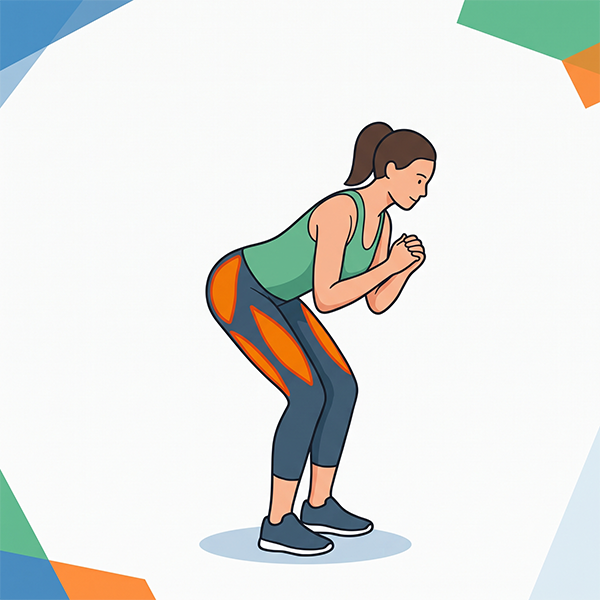
힙 힌지 (Hip Hinge)시작 자세발을 어깨 폭으로 벌리고 무릎을 살짝 굽혀 준비합니다.
동작 방법등을 곧게 편 채로 골반부터 접듯이 상체를 앞으로 숙입니다.
주의사항등이 둥글어지지 않게. 무릎이 너무 굽혀지지 않도록 주의합니다.
팔꿈치
주요 증상
- 팔꿈치 바깥쪽 통증
- 물병·프라이팬 들 때 팔꿈치가 시큰
- 손목을 위로 젖히거나 꽉 쥘 때 방사통, 악력 약해짐
자가진단 체크리스트
각 항목을 직접 시행해보고 해당 여부를 체크하세요. 2개 이상 해당된다면 재활운동을 시작하는 것을 권장합니다.
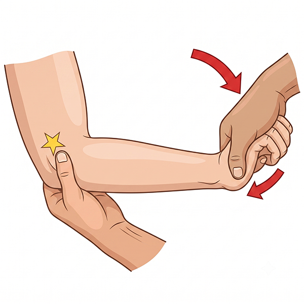
-
코즌 검사 (Cozen's Test)
방법주먹을 쥔 상태에서 손목을 위로 젖힌 뒤 반대손으로 저항을 줍니다.
판단팔꿈치 바깥쪽에 통증이 유발되면 테니스엘보 확진에 매우 가깝습니다.
-
외측상과 압통 검사
방법팔꿈치 바깥쪽 튀어나온 뼈를 손가락으로 눌러봅니다.
판단국소적으로 심한 압통이 있으면 외측상과염이 진행된 상태입니다.
-
밀즈 검사 (Mill's Test)
방법팔을 편 상태에서 반대손으로 손목을 아래로 부드럽게 꺾어봅니다.
판단팔꿈치 바깥쪽에 통증이 유발되면 손목 신전근 힘줄 손상 신호입니다.
재활운동법
순서대로 진행하되, 통증이 심해지면 즉시 중단하세요. 하루 2~3회 시행을 권장합니다.
-
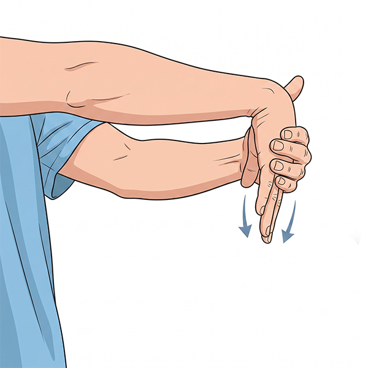
손목 신전근 스트레칭시작 자세팔을 앞으로 곧게 뻗고 손등이 위를 향하게 합니다.
동작 방법반대 손으로 손등을 아래로 부드럽게 당겨 팔꿈치 바깥쪽을 늘립니다.
주의사항급격한 통증이 있으면 중단. 시원한 정도의 강도만 유지합니다.
-
 원심성 손목 강화 (Eccentric Wrist Extension)
원심성 손목 강화 (Eccentric Wrist Extension)시작 자세팔뚝을 테이블에 올리고 손은 테이블 밖으로 나오게 합니다. 가벼운 아령을 잡습니다.
동작 방법반대 손으로 손을 올려준 뒤, 그 상태에서 아령을 아주 천천히(3~5초) 아래로 내립니다.
주의사항통증이 있으면 무게를 줄일 것. 급성기(부기·열감)에는 절대 하지 않습니다.
-
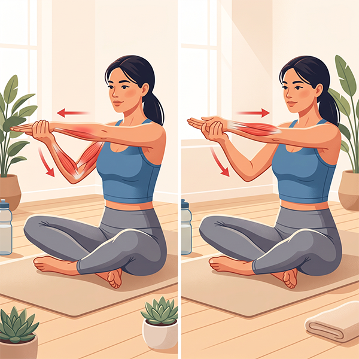
회내근·회외근 스트레칭시작 자세팔을 앞으로 뻗고 팔꿈치를 곧게 편 상태를 유지합니다.
동작 방법반대 손으로 손바닥을 안쪽·바깥쪽으로 부드럽게 돌려 전완근을 늘립니다.
주의사항반동 없이 정적으로 유지합니다. 통증 없는 범위에서만 시행합니다.
주요 증상
- 팔꿈치 안쪽 통증
- 손목을 안쪽으로 꺾거나 물건을 쥘 때 시큰
- 골프 스윙·야구 던지기 시 통증, 새끼손가락 저림 동반될 수 있음
자가진단 체크리스트
각 항목을 직접 시행해보고 해당 여부를 체크하세요. 2개 이상 해당된다면 재활운동을 시작하는 것을 권장합니다.
-
골프엘보 저항 검사
방법손목을 안쪽(손바닥 방향)으로 꺾은 상태에서 반대손으로 저항을 줍니다.
판단팔꿈치 안쪽에 통증이 유발되면 내측상과염(골프엘보) 확진에 가깝습니다.
-
내측상과 압통 검사
방법팔꿈치 안쪽 튀어나온 뼈를 손가락으로 눌러봅니다.
판단국소적으로 심한 압통이 있으면 굴곡근 힘줄 손상이 진행된 상태입니다.
-
악력·물건 쥐기 통증
방법강한 악력이 필요한 동작(악수, 병뚜껑 열기, 무거운 물건 들기)을 시도합니다.
판단팔꿈치 안쪽으로 뻗치는 통증이 있으면 골프엘보가 진행된 상태입니다.
재활운동법
순서대로 진행하되, 통증이 심해지면 즉시 중단하세요. 하루 2~3회 시행을 권장합니다.
-
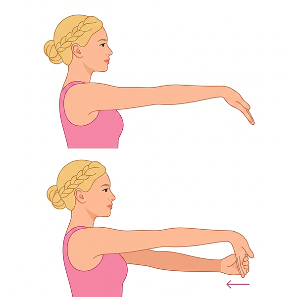
손목 굴곡근 스트레칭시작 자세팔을 앞으로 뻗고 손바닥이 위를 향하게 합니다.
동작 방법반대 손으로 손가락을 아래로 부드럽게 당겨 팔꿈치 안쪽을 늘립니다.
주의사항통증이 심하면 각도를 줄일 것. 반동을 사용하지 않습니다.
-
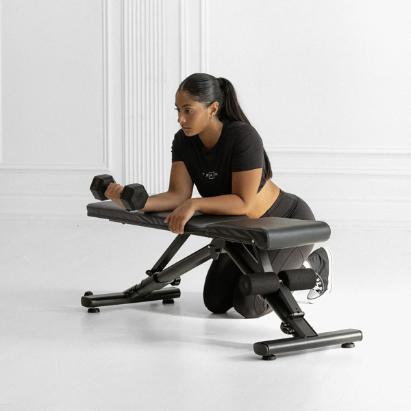
원심성 손목 굴곡 강화시작 자세팔뚝을 테이블에 올리고 손바닥이 위를 향하게 합니다. 가벼운 아령을 잡습니다.
동작 방법반대 손으로 손을 올려준 뒤, 그 상태에서 아령을 아주 천천히(3~5초) 아래로 내립니다.
주의사항통증이 있으면 무게 감소. 급성기에는 절대 하지 않습니다.
-
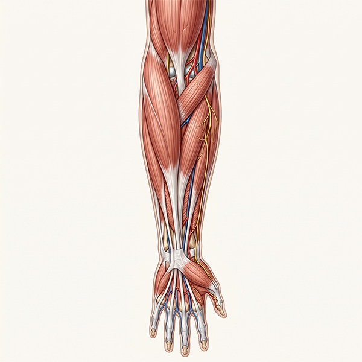
전완근 셀프 마사지시작 자세편안히 앉거나 서서 아픈쪽 팔을 앞으로 뻗습니다.
동작 방법반대 손 엄지로 팔꿈치 안쪽 아래 전완근을 위·아래로 눌러가며 부드럽게 풀어줍니다.
주의사항극심한 통증 지점은 피하고 뻐근한 부위 위주로 마사지합니다.
손목
주요 증상
- 새벽·밤에 손이 저리고 감각이 둔함
- 엄지·검지·중지 감각 저하, 물건을 자주 떨어뜨림
- 손을 털면 저림이 일시적으로 완화됨
자가진단 체크리스트
각 항목을 직접 시행해보고 해당 여부를 체크하세요. 2개 이상 해당된다면 재활운동을 시작하는 것을 권장합니다.
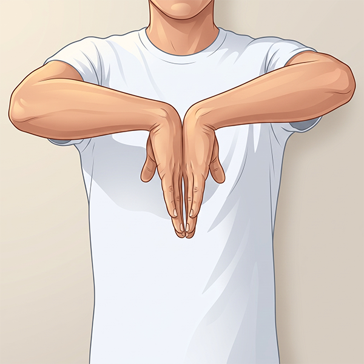
-
팔렌 검사 (Phalen's Test)
방법양손등을 서로 맞대고 손목을 90도로 굽힌 상태로 1분 이상 유지합니다.
판단엄지·검지·중지에 저림이 유발되면 손목터널 증후군을 강하게 의심합니다.
-
티넬 검사 (Tinel's Sign)
방법손목 안쪽 정중선(정중신경 부위)을 손가락으로 부드럽게 두드려봅니다.
판단손가락 쪽으로 저림이 방사되면 정중신경이 압박된 상태입니다.
-
무지구근 위축 확인
방법엄지 아래쪽 두툼한 근육(무지구근)을 반대편 손과 비교해봅니다.
판단한쪽이 눈에 띄게 얇아졌으면 만성 진행 상태로 조기 치료가 필요합니다.
재활운동법
순서대로 진행하되, 통증이 심해지면 즉시 중단하세요. 하루 2~3회 시행을 권장합니다.
-
정중신경 활주 (Median Nerve Gliding)
시작 자세팔을 옆으로 뻗어 손바닥이 위를 향하게 합니다.
동작 방법손목·손가락·팔꿈치를 순차적으로 굽혔다 펴며 정중신경을 부드럽게 활주시킵니다.
주의사항급격한 저림이 유발되면 즉시 중단. 통증 없는 범위에서만 시행합니다.
-
손목 굴곡·신전 스트레칭
시작 자세팔을 앞으로 뻗고 팔꿈치를 곧게 편 상태를 유지합니다.
동작 방법반대 손으로 손을 위·아래로 부드럽게 젖혀 손목 앞뒤를 늘립니다.
주의사항반동 없이 정적으로 유지합니다. 통증 없는 범위에서만 시행합니다.
-
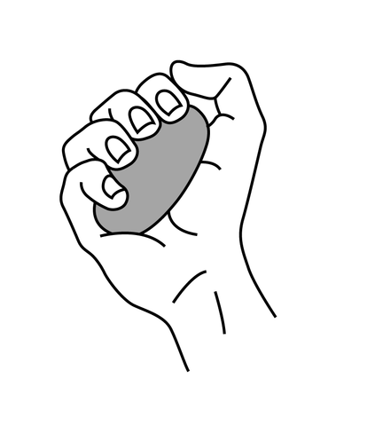
그립볼 강화시작 자세스트레스볼이나 부드러운 공을 손바닥 안에 편안하게 쥡니다.
동작 방법힘껏 쥐었다가 완전히 폈다가 반복합니다.
주의사항통증이 심해지면 더 부드러운 공으로 변경. 무리하지 않습니다.
주요 증상
- 엄지손가락 아래(손목 요골쪽) 통증
- 아기 안을 때, 스마트폰 오래 쓸 때 심해짐
- 물건 집거나 병뚜껑 열 때 시큰
자가진단 체크리스트
각 항목을 직접 시행해보고 해당 여부를 체크하세요. 2개 이상 해당된다면 재활운동을 시작하는 것을 권장합니다.
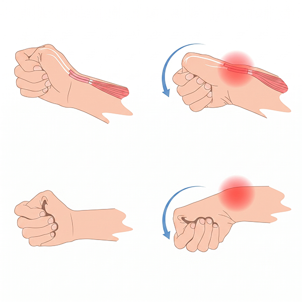
-
핀켈스타인 검사 (Finkelstein Test)
방법엄지를 손바닥 안으로 접고 주먹을 쥔 뒤, 손목을 새끼손가락 방향으로 꺾습니다.
판단손목 요골쪽(엄지 아래)에 극심한 통증이 유발되면 드퀘르벵 확진에 가깝습니다.
-
엄지 아래 부종·열감 확인
방법엄지 아래쪽 손목 부위를 반대편과 비교해봅니다.
판단부기, 열감, 눌렀을 때 압통이 있으면 힘줄 염증 상태입니다.
-
엄지 사용 동작 통증
방법물건 집기, 병뚜껑 열기, 스마트폰 타이핑 등 엄지를 자주 쓰는 동작을 시도합니다.
판단엄지 사용 동작마다 시큰·찌릿한 통증이 있으면 진행된 상태입니다.
재활운동법
순서대로 진행하되, 통증이 심해지면 즉시 중단하세요. 하루 2~3회 시행을 권장합니다.
-
손목 굽힘/젖힘 스트레칭
시작 자세팔을 앞으로 쭉 뻗고 손바닥이 정면을 향하게 합니다.
동작 방법반대쪽 손을 이용해 손가락을 몸 쪽으로 부드럽게 당겨줍니다. (아래로도 동일하게 진행)
주의사항팔꿈치가 굽혀지지 않도록 주의하며, 뻐근하고 시원한 느낌이 들 때까지만 당깁니다.
-
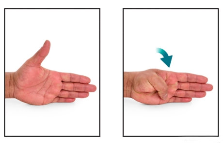
엄지 외전 강화시작 자세손날을 아래로 하여 테이블에 새끼손가락을 대고 손바닥을 옆으로 세웁니다.
동작 방법엄지를 위쪽 천장 방향으로 천천히 벌렸다가 다시 모읍니다.
주의사항통증이 심하면 범위를 줄일 것. 저항 없이 시작합니다.
-
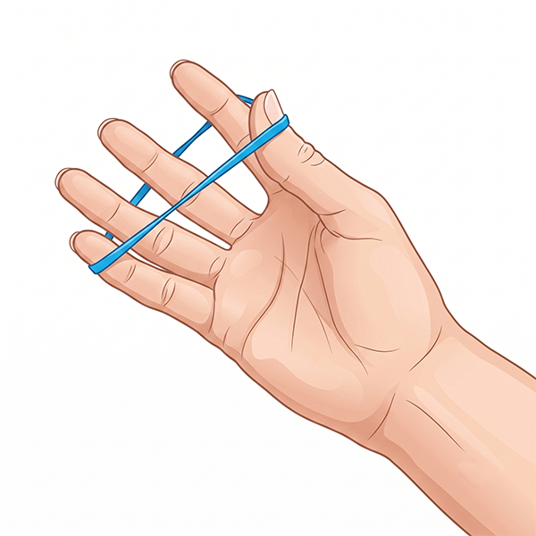
고무줄 손가락 벌리기시작 자세다섯 손가락을 모은 상태에서 겉면에 흔한 노란색 고무줄을 끼웁니다.
동작 방법고무줄의 탄력을 이겨내며 손가락과 엄지를 바깥쪽으로 활짝 벌려줍니다.
주의사항통증이 없는 범위 내에서 진행하며, 튕기지 않고 천천히 원래 자세로 돌아옵니다.
무릎
주요 증상
- 계단 내려갈 때 슬개골(무릎뼈) 뒤가 시큰
- 오래 앉았다 일어날 때 뻣뻣하고 아픔 (극장 사인)
- 무릎 앞쪽에 애매하게 걸리는 통증, 쪼그려 앉기 힘듦
자가진단 체크리스트
각 항목을 직접 시행해보고 해당 여부를 체크하세요. 2개 이상 해당된다면 재활운동을 시작하는 것을 권장합니다.
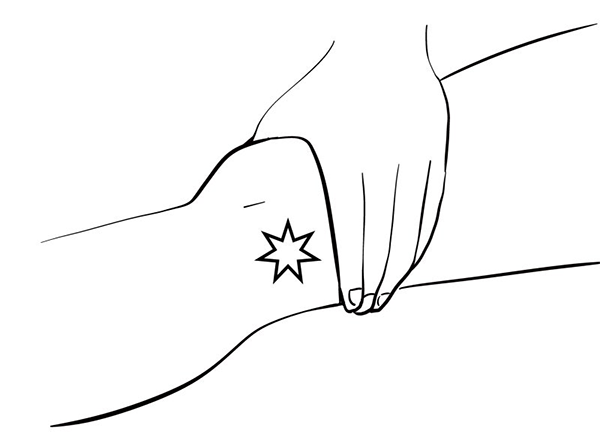
-
한 발 스쿼트 검사
방법한 발로 서서 반대쪽 다리를 앞으로 뻗은 채 무릎을 굽혀 스쿼트 자세로 내려갑니다.
판단무릎이 안쪽으로 무너지거나(Knee valgus) 흔들리면 근력 불균형이 심한 상태.
-
슬개골 압박 검사
방법다리를 곧게 편 상태에서 슬개골(무릎뼈)을 손으로 눌러 좌우로 움직여봅니다.
판단마찰음이 나거나 통증이 있으면 슬개대퇴 관절에 문제가 있습니다.
-
극장 사인 (Movie Sign)
방법무릎을 굽힌 채로 30분 이상 앉아있어봅니다.
판단일어날 때 무릎 앞쪽이 뻣뻣하고 아프면 슬개대퇴 통증의 전형적 증상입니다.
재활운동법
순서대로 진행하되, 통증이 심해지면 즉시 중단하세요. 하루 2~3회 시행을 권장합니다.
-
스트레이트 레그 레이즈 (SLR)
시작 자세누워서 한쪽 무릎은 세우고 반대쪽 다리를 곧게 편 상태로 준비합니다.
동작 방법편 다리를 곧게 유지한 채 발끝을 몸쪽으로 당기며 30~40cm 들어올립니다.
주의사항허리가 바닥에서 뜨지 않게. 무릎이 굽혀지지 않도록 대퇴사두근에 힘을 유지합니다.
-
클램쉘 (Clamshell)
시작 자세옆으로 누워 무릎을 90도로 굽히고 발뒤꿈치를 서로 붙입니다.
동작 방법발뒤꿈치는 붙인 채 위쪽 무릎만 천장으로 벌리며 엉덩이를 조입니다.
주의사항골반이 뒤로 넘어가지 않게. 상체는 흔들리지 않도록 유지합니다.
-
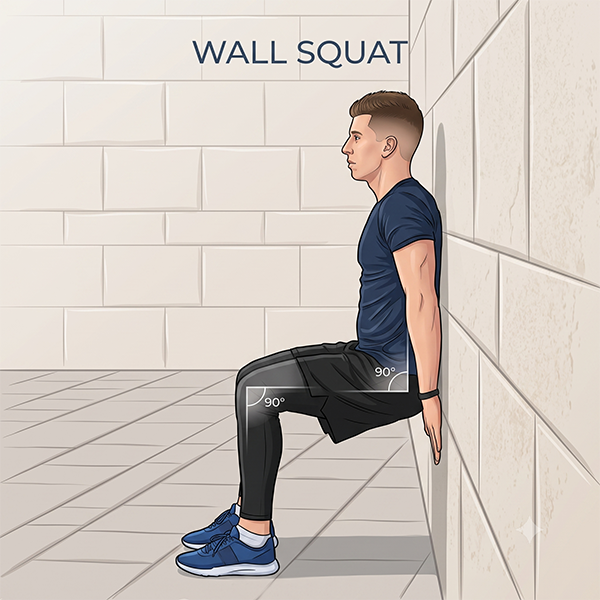
월 스쿼트 (Wall Squat)시작 자세벽에 등을 대고 서서 발을 어깨 폭으로 벌리고 벽에서 30cm 정도 앞으로 나옵니다.
동작 방법벽을 따라 미끄러지듯 내려가 무릎을 60도 정도 굽혀 유지합니다.
주의사항무릎이 발끝을 넘지 않게. 무릎이 안쪽으로 무너지지 않도록 주의합니다.
주요 증상
- 무릎 안쪽 또는 바깥쪽 관절선을 따라 통증
- 뚝 소리와 함께 무릎이 걸리는 느낌 (Locking)
- 완전히 펴지거나 굽혀지지 않고 부종·열감 동반
자가진단 체크리스트
각 항목을 직접 시행해보고 해당 여부를 체크하세요. 2개 이상 해당된다면 재활운동을 시작하는 것을 권장합니다.
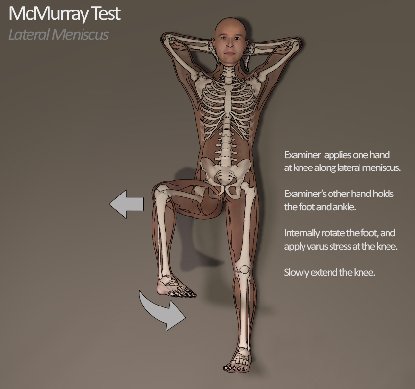
-
맥머레이 검사 (McMurray Test)
방법누워서 무릎을 최대한 굽힌 뒤 발을 좌우로 회전시키며 천천히 폅니다.
판단'뚝' 소리와 함께 통증이나 걸리는 느낌이 있으면 연골 손상을 의심합니다.
-
관절선 압통 검사
방법무릎 안쪽·바깥쪽 관절선(무릎뼈 아래 옆쪽)을 손가락으로 눌러봅니다.
판단특정 지점에 국소적으로 심한 압통이 있으면 반월상 연골이 손상된 상태입니다.
-
딥 스쿼트 통증
방법발을 어깨 폭으로 벌리고 최대한 깊이 앉아봅니다.
판단최저점에서 무릎이 걸리거나 극심한 통증이 있으면 후각(뒤쪽) 연골 손상 가능성.
재활운동법
순서대로 진행하되, 통증이 심해지면 즉시 중단하세요. 하루 2~3회 시행을 권장합니다.
-
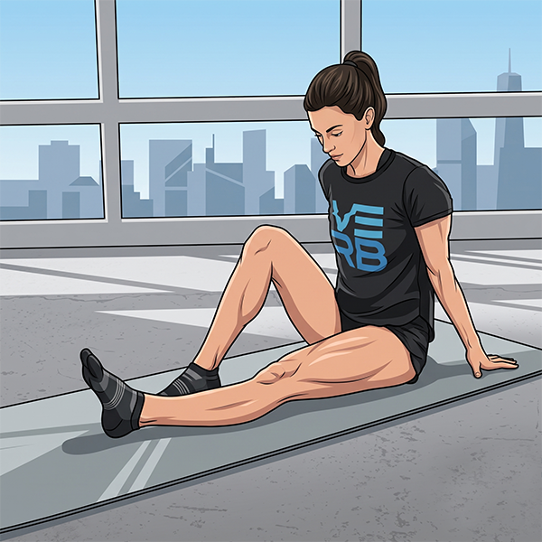
대퇴사두근 세팅 (Quad Setting)시작 자세다리를 곧게 편 채로 앉거나 눕습니다.
동작 방법무릎 뒤를 바닥 쪽으로 밀듯이 힘을 주고 대퇴사두근(허벅지 앞)을 수축시킵니다.
주의사항통증이 있으면 강도를 낮출 것. 급성기에도 안전하게 시행할 수 있는 기본 운동입니다.
-
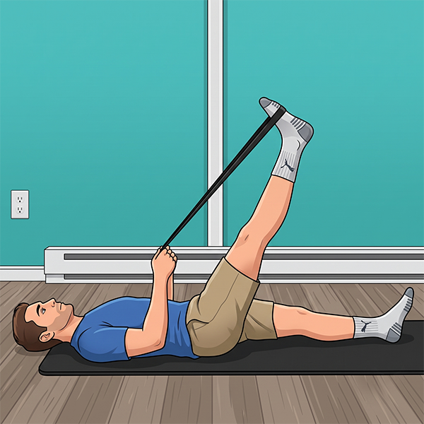
햄스트링 스트레칭시작 자세누워서 한쪽 다리는 굽히고, 반대 다리는 곧게 펴 위로 뻗습니다.
동작 방법수건을 발바닥에 걸고 다리를 곧게 유지한 채 부드럽게 몸쪽으로 당깁니다.
주의사항무릎이 굽혀지지 않게. 반동 없이 정적으로 유지합니다.
-
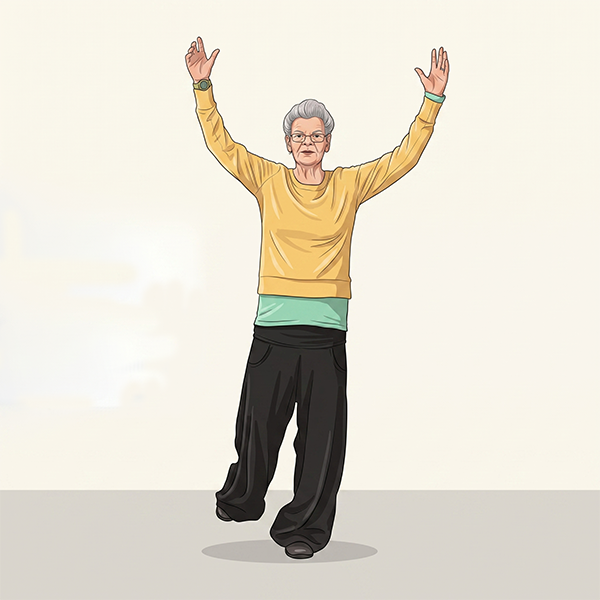
한 발 균형 훈련시작 자세벽이나 의자 옆에 서서 한 발로 서기 자세를 취합니다.
동작 방법한 발로 30초 서기. 익숙해지면 눈감기 또는 쿠션 위에서 진행합니다.
주의사항반드시 안전한 지지물 근처에서. 갑작스러운 통증이 있으면 즉시 중단합니다.